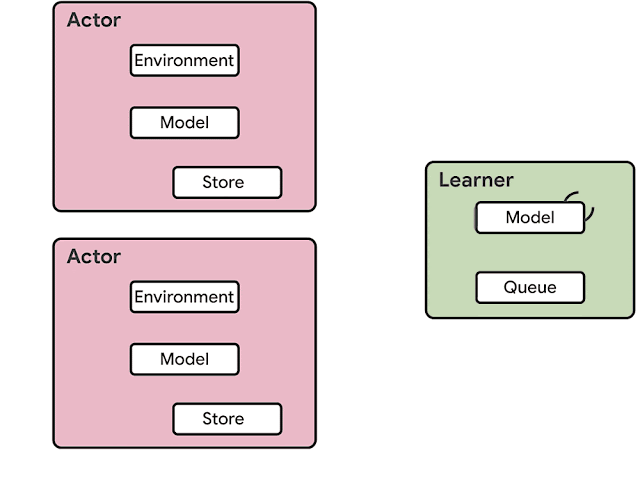
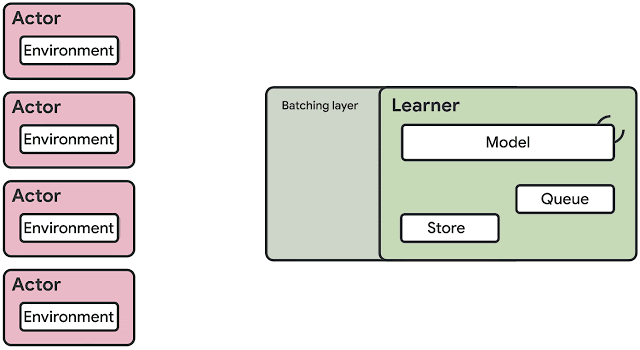
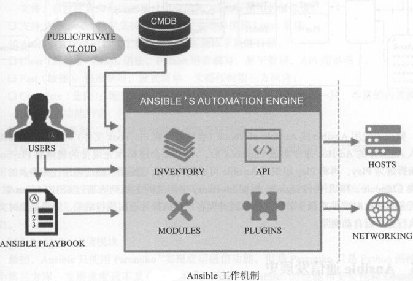

Reinforcement Learning via Cloud Computing
Publish date: Sunday, June 7, 2020
notes from Google Cloud Blog on how to use GCP for reinforcement learning tasks
谷歌早期的IMPALA模型

IMPALA学习框架，有一个central agent不断完善模型，并传递给不同的影分身，让他们去探索相同的环境
改进版本的SEED模型

SEED学习框架，只有一个model完成学习和预测，并且把预测结果传输给每一个环境，这不就是multi-env?
一个谷歌云计算相关的Repo解析
创建云计算虚拟机实例
1
2
|
# bash ./scripts/gcp-create-instances.sh 可以同时运行多个instance执行不同实验
gcloud compute instances create rl-worker-0001 --source-instance-template rl-04cpu --zone=europe-west1-b --labels experiment=breakout_a2c,algo=a2c
|
基于ansible管理不同实例

用户通过写playbook把所有命令分发给被托管的主机实例
自动化管理instance配置和云服务管理
- 安装
ansible，可以使用pip install ansible，用ansible --version验证版本，
- 编辑
host inventory，告诉ansible哪些实例需要被托管，还可以将他们分类管理，例如下面的
1
2
3
4
5
6
7
8
9
10
11
|
plugin: gcp_compute
projects:
- projectname
auth_kind: serviceaccount
groups:
rl: true
filters:
- 'labels.algo = ppo'
- any filters you may want
service_account_file: /home/yourdir/gcp/serviceaccount.json
|
在所有托管服务器上安装工具
从Ansible Galaxy下载别人写好的role，然后指定每一个role需要执行的命令
1
|
ansible-galaxy install geerlingguy.docker geerlingguy.pip
|
对敏感数据文件进行加密，存放在vault/mongo.yaml
1
|
ansible-playbook full_setup.yaml -i inventory/rl.gcp.yml --vault-id /home/jerry/gcp/vault_password.secret -e @vault/mongo.yaml
|
下面是一个rl.gcp.yml的例子，明确了主机名称, 并激活权限提升(become:yes)，
1
2
3
4
5
6
7
8
9
10
11
12
13
14
15
16
|
# Root role - set up server packages that require higher privilege
- name: Priviledged server setup
hosts: rl
become: yes
roles:
- role: geerlingguy.docker
vars:
docker_users:
- ubuntu
- role: geerlingguy.pip
vars:
pip_install_packages:
- docker
- daemonize
- pyyaml
- role: nvidia-docker
|
对于geerlingguy.docker和geerlingguy.pip，其中的变量vars都将在roles中生效，而nvidia-docker则被定义在roles/nvidia-docker文件夹里，定义需要被执行的任务，实现的变量，安装依赖等等 (apt是linux里的安装工具，state代表仅搜索稳定的版本)
1
2
3
4
5
6
7
8
9
10
11
12
13
14
15
16
17
18
19
20
21
22
23
24
25
26
27
28
29
30
31
32
33
34
35
36
37
38
39
40
41
42
43
44
45
46
47
48
49
50
|
docker_restart_handler_state: restarted
nvidia_cuda_package_url: "http://developer.download.nvidia.com/compute/cuda/repos/ubuntu1604/x86_64/cuda-repo-ubuntu1604_9.2.148-1_amd64.deb"
nvidia_cuda_key_url: "http://developer.download.nvidia.com/compute/cuda/repos/ubuntu1604/x86_64/7fa2af80.pub"
# defaults/main.yml
- name: restart docker
service: "name=docker state={{ docker_restart_handler_state }}"
# handlers/main.yml 上面就是满足条件就会被触发，需要和下面任务中的notify对应
- name: Download CUDA package
get_url:
url: "{{ nvidia_cuda_package_url }}"
dest: /tmp/cuda_install.deb
- name: CUDA | Install downloaded deb package for Ubuntu 16.04
apt:
deb: /tmp/cuda_install.deb
- name: Install cuda repo key
apt_key:
url: "{{nvidia_cuda_key_url}}"
state: present
- name: Install cuda
apt:
name: cuda
state: present
update_cache: "{{ 'yes' if not ansible_check_mode | bool else 'no' }}"
- name: nvidia-runtime-containerd release key is registered
apt_key:
url: https://nvidia.github.io/nvidia-container-runtime/gpgkey
state: present
- name: software-properties-common is installed for prerequisite for apt_repository ansible module
apt:
name: software-properties-common
state: present
update_cache: "{{ 'yes' if not ansible_check_mode | bool else 'no' }}"
- name: nvidia-container-runtime apt repositories are registered
apt_repository:
repo: "{{ item }}"
filename: nvidia-container-runtime
state: present
mode: 0644
update_cache: "{{ 'yes' if not ansible_check_mode | bool else 'no' }}"
with_items:
- 'deb https://nvidia.github.io/libnvidia-container/ubuntu16.04/amd64 /'
- 'deb https://nvidia.github.io/nvidia-container-runtime/ubuntu16.04/amd64 /'
- 'deb https://nvidia.github.io/nvidia-docker/ubuntu16.04/amd64 /'
- name: Install nvidia-docker2
apt:
name: nvidia-docker2
state: present
when: not ansible_check_mode
notify: restart docker
# tasks/main.yml
|
在所有托管服务器上执行实验
1
|
ansible-playbook run_experiments.yaml -i inventory/rl.gcp.yml --vault-id /home/jerry/gcp/vault_password.secret -e @vault/mongo.yaml
|
1
2
3
4
5
6
|
# User role - carry out experiment defined in
- name: User environment setup
hosts: rl
user: ubuntu
roles:
- experiment-data //执行./roles/experiment-data文件夹的指令
|
1
2
3
4
5
6
7
8
9
10
11
12
13
14
15
16
17
18
19
20
21
22
23
24
25
26
27
28
29
30
31
32
33
34
|
# templates/tasklist.j2
tasks:
- name: experiment
path: {{ hostvars[inventory_hostname]['labels']['experiment'] }}
number: 1
- name: experiment
path: {{ hostvars[inventory_hostname]['labels']['experiment'] }}
number: 2
- name: experiment
path: {{ hostvars[inventory_hostname]['labels']['experiment'] }}
number: 3
- name: experiment
path: {{ hostvars[inventory_hostname]['labels']['experiment'] }}
number: 4
- name: experiment
path: {{ hostvars[inventory_hostname]['labels']['experiment'] }}
number: 5
- name: experiment
path: {{ hostvars[inventory_hostname]['labels']['experiment'] }}
number: 6
- name: halt
# templates/velproject.j2
storage:
name: vel.storage.classic
backend:
name: vel.storage.backend.mongodb
uri: {{ mongodb_connection_url }}
database: deep_learning
streaming:
- name: vel.storage.streaming.stdout
checkpoint_strategy:
name: vel.storage.strategy.classic_checkpoint_strategy
|
下面定义主要执行任务, 然后./experiments/文件夹里也是定义了一大堆的config文件来定义某一个实验的参数
1
2
3
4
5
6
7
8
9
10
11
12
13
14
15
16
17
18
19
20
21
22
23
24
25
26
27
|
- name: Set correct owner to the experimenets directory
become: yes
file:
path: /experiments
owner: ubuntu
state: directory
- name: Copy experiment configuration to a destination server
become: yes
copy:
src: ./experiments/
dest: /experiments
owner: ubuntu
- name: Pull docker image
docker_image:
name: millionintegrals/baselines-experiments:latest
pull: true
force: true
- name: Project configuration template
template:
src: templates/velproject.j2
dest: /experiments/.velproject.yaml
- name: Project task list
template:
src: templates/tasklist.j2
dest: /experiments/tasklist.yaml
- name: Run experiment
command: "python /experiments/run_experiment.py /experiments/tasklist.yaml"
|
Back to Top
{kind=link}
{kind=link}
{kind=link}